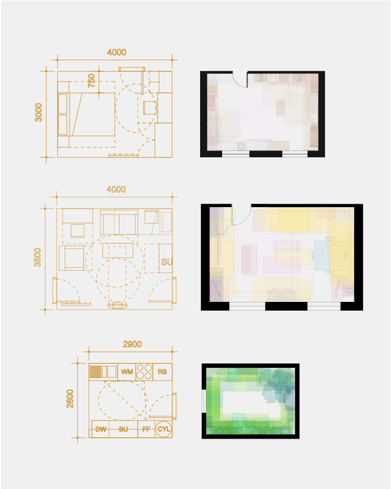

Evidence-based Housing Design
This course is taught as part of a research studio to first-year MArch Architecture and Urbanism students. It is centred around the questions: how do we evaluate housing, what makes it good, and how do we translate different ideas of good into design? Students develop research-based positions on the social, environmental, and economic value of housing, and learn to make those positions consequential for design decisions.
1 Dwelling, User, Home
This part examines housing at the scale of the dwelling and the domestic life within it. Students explore how spatial organisation reflects and produces social norms, how people invest meaning and identity in their homes, and how design standards attempt to codify functional sufficiency. The aim is to situate analysis within a richer understanding of how people actually inhabit space.

2 Building and Estate
This part examines housing at the scale of the building and the estate. Students investigate how density, typology, and built form shape the social life of residential neighbourhoods, and how architectural decisions produce or foreclose different possibilities for collective living.
3 Energy and Aesthetics
This part situates housing design within broader environmental responsibilities. Students examine the embodied and operational carbon of residential construction, and explore how energy performance can be integrated into design decision-making from the earliest stages.
Methods
The studio has run with two methodological emphases. In 2023–25 it was taught as Evidence-based Housing Design: How should we design the 1.5 million homes?, drawing on qualitative and quantitative methods from the social sciences and policy analysis to interrogate the dwelling, the building, and the estate. In 2025–26 it has been taught as Quantifying Space, Valuing Design, introducing parametric modelling and computational experimentation as tools for testing design alternatives against social and environmental criteria. Both iterations turn on the same central question; they differ in the methods through which students answer it.